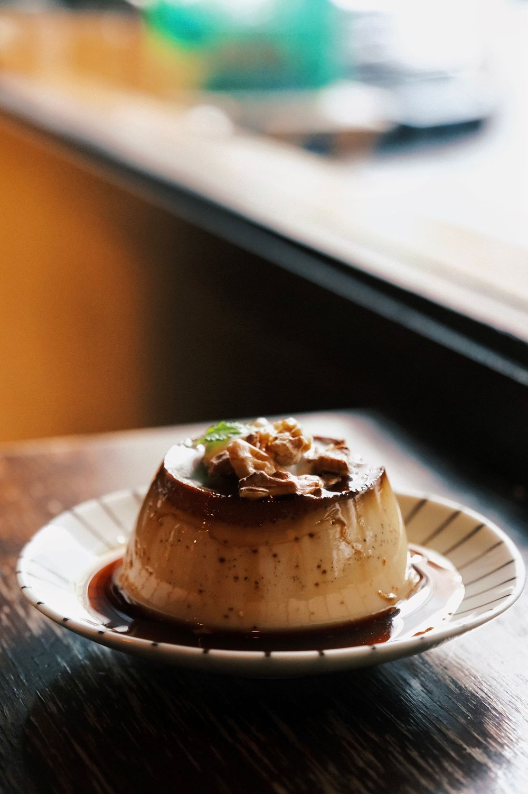

DE LA OLLA A TU MESA
DE LA OLLA A TU MESAMAÍZ / CALDITO / TRADICIÓN
Pozole de la casa
$110Maíz pozolero y carne de cerdo, con lechuga, rábano, cebolla, orégano y limón.
Tazón individual01
Receta y precio de ejemplo.EL PARIÁN / SAN PEDRO TLAQUEPAQUE
Pozole, enchiladas y tostadas.
Una buena cena en el corazón de El Parián.
Los protagonistas de una buena cena.
DE LA OLLA A TU MESAMaíz pozolero y carne de cerdo, con lechuga, rábano, cebolla, orégano y limón.
 CON CARÁCTER
CON CARÁCTERDe pollo, con salsa roja o verde, crema y queso.
 CRUJE BONITO
CRUJE BONITOFrijoles, pollo, lechuga, crema y queso sobre una tortilla crujiente.
Quédate por los antojitos.
Alarga la noche con música en vivo.
Programación propuesta · Días y horarios por confirmar con el negocio.
Consulta la programación con nosotros ↗Limón, sal y una plática que se alarga.
 BIEN
BIENBotella de 355 ml. Consulta las marcas disponibles.
Cerveza, limón, sal y salsas · 500 ml.
Bebidas alcohólicas · Solo mayores de 18 años.
Disfruta con moderación. Si tomas, no manejes.
BEBIDAS ALCOHÓLICAS

Servicio derecho · 45 ml.
Servicio derecho · 45 ml.
Tequila, toronja y un toque de limón · 350 ml.
Tequila, limón y licor de naranja · 250 ml.
Solo mayores de 18 años.
Disfruta con moderación. Si tomas, no manejes.
Horchata, jamaica o tamarindo · 500 ml.
Botella de 355 ml. Sabores disponibles en mesa.
Con canela y piloncillo · Una taza de 240 ml.
Porque siempre queda un lugarcito.

Suave, cremoso y bañado en caramelo.
Porción individualCon canela, como el de casa.
Porción individualCrujientes, con azúcar, canela y miel de piloncillo.
2 piezasGelatina de leche con cubitos de colores.
Porción individualPedidos a domicilio por WhatsApp.
Consulta cobertura, disponibilidad y costo de envío al hacer tu pedido.
El WhatsApp del negocio está pendiente de configurar.
Consulta ingredientes y alergias con nuestro personal.
Precios de ejemplo en MXN. Fotos de referencia; la presentación puede variar.